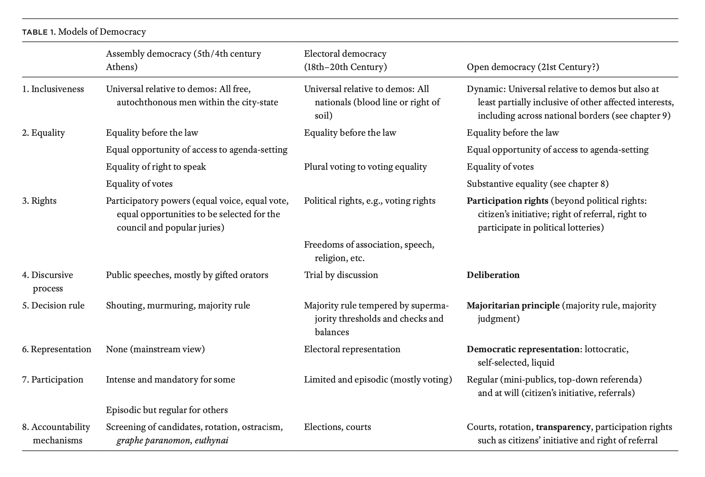
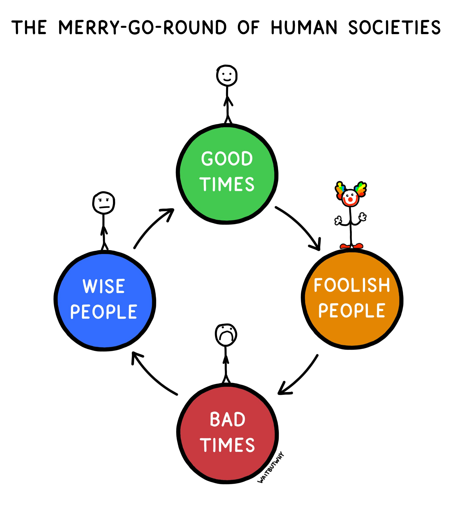

class: center, middle # Democracy in the 21st Century *Theories of Democracy at Shoshin College* October 2024 --- # Democracy Today Is there democracy in the world today? --- # Books * [Against Elections: The Case for Democracy](), David Van Reybrouck, 2013 * [Superintelligence](https://en.wikipedia.org/wiki/Superintelligence%3A_Paths%2C_Dangers%2C_Strategies), Nick Bostrom, 2014 * [Against Democracy](), Jason Brennan, 2016 * [Democracy for Realists](), Christopher H. Achen, Larry M. Bartels, 2016 * [On Tyranny](), Timothy Snyder, 2017 * [Psychopolitics](), Byung-Chul Han, 2017 * [NO! Against Adult Supremacy](https://www.akpress.org/no.html), 2019 * [Open Democracy](https://press.princeton.edu/books/hardcover/9780691181998/open-democracy), Hélène Landemore, 2020 * [Less Is More: How Degrowth Will Save the World](https://www.jasonhickel.org/less-is-more), Jason Hickel, 2021 * [Experiments in Imagining Otherwise](https://www.hajarpress.com/books/experiments-in-imagining-otherwise), Lola Olufemi, 2021 * [Give Children the Vote: On Democratizing Democracy](https://www.bloomsbury.com/us/give-children-the-vote-9781350196261/), John Wall, 2021 * [Sadly, Porn](), Edward Teach, 2021 * [Debating Democracy](), Jason Brennan, Hélène Landemore, 2021 * [The Capitalist Manifesto](), Johan Norberg, 2023 * [Plurality](https://www.plurality.net/), E. Glen Weyl, Audrey Tang and ⿻ Community, 2024 --- # Representative Democracy * Current Western model * Elections, work, repeat --- # Elections * Identity and loyalty * Elitism * Populism * Polarisation * Accountability --- # Voter’s education --- # Technocracy and aristocracy --- # Laws and lawmaking --- # What about Direct Democracy? * General view * Hélène Landemore's view --- # Open Democracy Hélène Landemore's book --- class: no-padding, middle  --- # Switzerland --- # Iceland --- # Open Source Software --- # Adult Supremacy --- # On AI --- # Does it matter if we have democracy? --- # Social Cycle Theory https://en.wikipedia.org/wiki/Social_cycle_theory --- class: center, middle  https://twitter.com/waitbutwhy/status/1496916140412801024 --- # Thank you for listening to me Comments or thoughts? --- # Feedback https://shoshincollege.org/feedback --- # Presentations https://github.com/sirodoht/theories-of-democracy